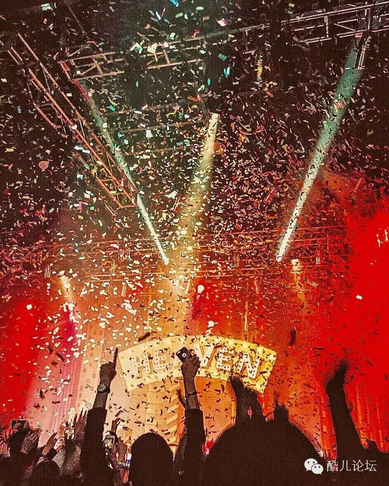
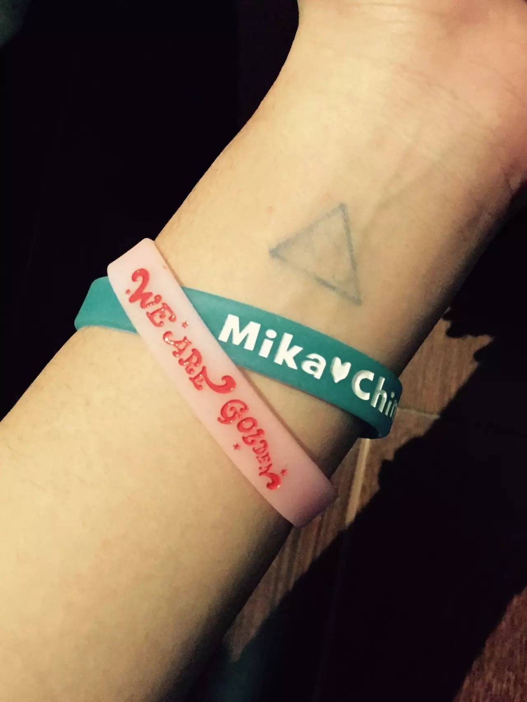

Mika Charm|0225 Live at Shanghai Part3
续 Mika Live at Shanghai Part2
Mika 上海巡演的第三波汇报来袭~~~
现场的我是难过的要哭出来的。在唱之前，有人（男）喊了句I love u，Mika就问What’s your name，全场的人都开始喊自己的名字2333，后来Mika随意挑了一个说要给他唱一首歌”I’m singing a song for u”。唱完了还问”Where are you”可爱死了啊啊啊
We Are Golden
比专辑中的鼓点更强的一个版本，几乎也是全场大合唱的。这首一如既往的以欢快的节奏配合悲伤的歌词，” Had to let the world let it bleed me dry”。即使唱着我们像金子一样啊，最后还是发现孤身一人，无人理解无人陪伴。（这种状态倒是很像前几天看的一篇文章《优质GAY，最终都一个人凄凉地牛逼着》）中途拿了一个马头，套到了贝斯手的头上（心疼贝斯手一秒钟），很快就拿了下来哒，我卡就是调皮任性怎么样，我们都可以原谅他啊。
这是全场最喜欢的一首歌！虽然是十年前的歌了，但每次听都会有不一样的感觉啊，尤其是和声，听得起一身鸡皮疙瘩，不抖两下是不行的。毫不夸张的说，这首歌是可以听哭的。唱中间”little bit love”不停重复的那一段，所有人帮Mika做和声，这么多人一起莫名地很感动。Mika又跑下来，坐到观众前面，炒鸡想要摸摸他的手啊腿啊脚啊身体啊啊啊啊啊好羡慕前排的人（对啊我就是变态但我只对Mika变态啊哼）到最后一段，Mika让全场安静，他也放下了话筒，在没有伴奏的情况下，清唱完了这首歌。虽然没有用话筒，即使在比较后排的位置也可以听得一清二楚。并且！没！有！车！祸！
一直欢快的人温柔下来感觉世界都在陪他一起难过。一束光从上面打下来，Mika像一个比例完美的雕塑站在话筒前，静静地向我们用唱歌的方式讲述着一个故事。大家都自发地打开了手机的闪光灯，在空中随着旋律挥舞。So raise your glasses all my kings and queens,let’s party.
本以为会以Last Party做结尾，唱完Mika就回后台了，大家在台下一起喊着”Mika!Mika!”，没想到他只是去换了件衣服，不久就又回到台上，进行最后的演出。在开始之前，他用中！文！说了句“该上床了”（好啊好啊我们去上床走走走）间奏的时候从台下的观众手里拿了一副炒鸡大的黄色墨镜，戴在了鼓手的头上。（调皮鬼~）最后一段他接过了鼓手手里的棒子，熟练地敲着节奏，边敲还边唱，完全无压力。然后无数的彩色纸片从上面飘落，会场瞬间爆炸，所有人都疯了一样蹦着，叫着。大概以“要热爱每一天，开心地过哦”这样的意思做结尾。

出了会场，在入口处免费领了两个手环。一个印着Mika♥China，一个印着Weare golden。
